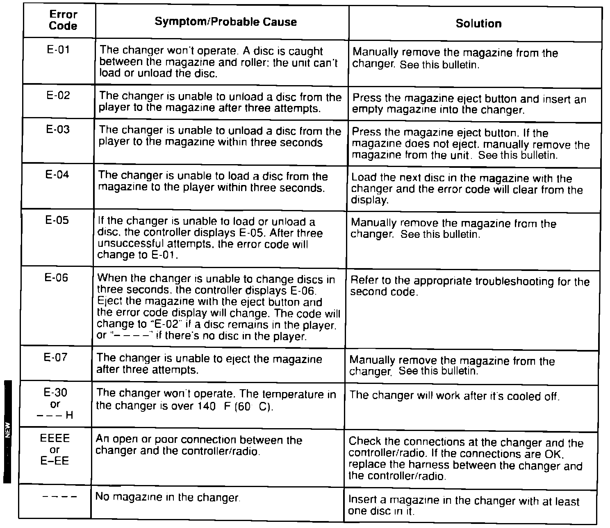
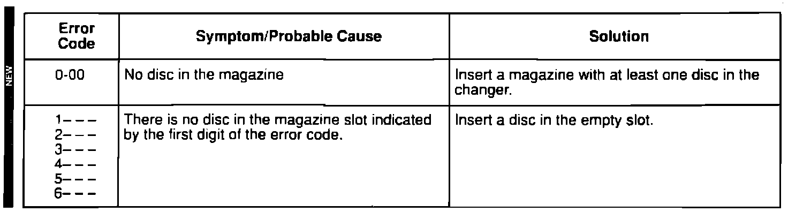
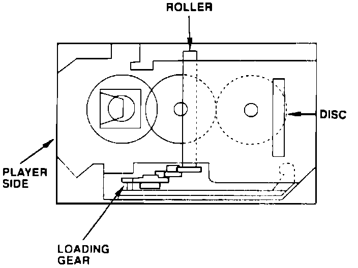
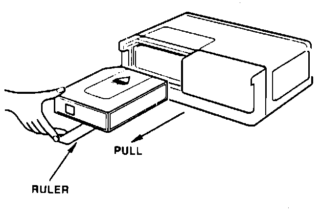

CD Changer Troubleshooting
February 19, 1991BULLETIN NO
90-010
YEAR
1990-1991
MODEL
ALL with TRUNK-MOUNTED
CD CHANGER
VIN APPLICATION
ALL
CD Changer Troubleshooting
(Supersedes 90-010 dated June 19, 1990)


If there's a problem with the CD changer, an error code is given in the display of the CD controller (1990) or radio (1991). Use these charts for troubleshooting.
The error codes apply only to a CD changer connected to the triple-function AM/FM/Cassette/CD audio system.
MANUALLY REMOVING A JAMMED MAGAZINE
1. Remove the changer from the car.
2. Remove the rear cover plate from the changer and look for a jammed disc.

3. If a disc is jammed between the player and the magazine, turn the loading gear until the disc returns to the player mechanism. Do not attempt to reload the disc back into the magazine.
4. After the disc is loaded into the player mechanism, turn the changer so that its front is facing you.
5. Insert a thin stainless steel ruler or a "Slim Jim" under the magazine, about 1-1/2" from the right side of the opening, as shown.
6. Push the ruler in until it presses against the eject lever at the back of the unit.

7. Slowly remove the ruler and magazine at the same time.